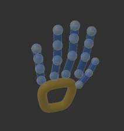

手部跟踪数据
手部跟踪数据主要包括： 手势 （常用标准手势）， 手部关节数据 ， 状态信息 等。 您可以根据项目需求，选择合适的数据使用，具体的调用方法，您可以参看API文档。
1. 手势
目前我们提供三种标准手势，如果此手势可以满足您的项目需求，您可以直接使用，后续我们会提供更丰富的标准手势交互方式。
准备手势
确认手势
2. 手部关节数据
RhinoX Pro可以通过世界坐标跟踪手部，并注释了二十个（十九个指节点和一个掌节点）关键节点的位置，下面是各关节点对应的 API名称。
开发者可以根据关节数据自定义手势，从而实现更灵活的交互
手部关节点
Index |
API Name |
|---|---|
0 |
Palm |
1 |
ThumbProximal |
2 |
ThumbDistal |
3 |
ThumbTip |
4 |
IndexProximal |
5 |
IndexMiddle |
6 |
IndexDistal |
7 |
IndexTip |
8 |
MiddleProximal |
9 |
MiddleMiddle |
10 |
MiddleDistal |
11 |
MiddleTip |
12 |
RingProximal |
12 |
RingMiddle |
14 |
RingDistal |
15 |
RingTip |
16 |
PinkyProximal |
17 |
PinkyMiddle |
18 |
PinkyDistal |
19 |
PinkyTip |
手部关节预制体
创建方式：Hierarchy面板鼠标右键 Ximmerse XR -> Virtual Hand Model。
路径: Packages/com.ximmerse.xr/Resources/Gesture/Virtual Hand Model.prefab
使用此预制体，开发者可以在内容中渲染被跟踪手部的虚拟手对象。
Note
该预制体仅作为手部模型显示使用，并不会对交互功能产生影响。
3. 手指弯曲度
//使用Finger.bendness 可以获取手指的弯曲度，使用弯曲度可以判断一些静态手势，例如下面的例子使用bendness判断静态手势:
if (handTrackingInfo.IsValid == false)
{
float bendnessThumb = handTrackingInfo.ThumbFinger.bendness; //bendess 字段代表手指的伸直程度，当bendness=0代表手指完全伸直，当bendess=1代表手指弯曲
float bendnessIndex = handTrackingInfo.IndexFinger.bendness; //食指的弯曲度
float bendnessMiddle = handTrackingInfo.MiddleFinger.bendness; //中指的弯曲度
float bendessRingFinger = handTrackingInfo.RingFinger.bendness; //无名指的弯曲度
float bendessLittleFinger = handTrackingInfo.RingFinger.bendness; //小指的弯曲度
//当食指和中指的弯曲度小于0.15，其他手指的弯曲度大于0.85的时候，判定用户静态手势
if(bendnessIndex <= 0.15f && bendnessMiddle <= 0.15f && bendnessThumb >= 0.85f && bendessRingFinger >= 0.85f && bendessLittleFinger >= 0.85f)
{
Debug.LogFormat("用户手势: 数字 2");
}
}
4. 常用 API
//Ximmerse.XR.InputSystems.HandTracking 类是处理手部跟踪的关键类
HandTracking.EnableHandTracking (); //激活手部跟踪
HandTracking.DisableHandTracking (); //停止手部跟踪
var currentHandTrackInfo = HandTracking.LeftHandTrackingInfo; //LeftHandTrackingInfo 包含当前左手手部跟踪的详细数据：每个指关节的位置，手腕的位置，手掌的朝向。 使用 RightHandTrackInfo即可获取右手的跟踪数据
if(currentHandTrackInfo.IsValid) //如果当前帧，RGB相机跟踪到手部姿态
{
var palmPos = currentHandTrackInfo.PalmPosition;//手掌位置
var palmNormal = currentHandTrackInfo.PalmNormal; //沿着手掌心向上的方向
var gestureType = currentHandTrackInfo.NativeGestureType; //2 = Open Hand (手掌心张开), 3 = Close Hand (握拳), 4 = Pinch (食指拇指捏合)
}